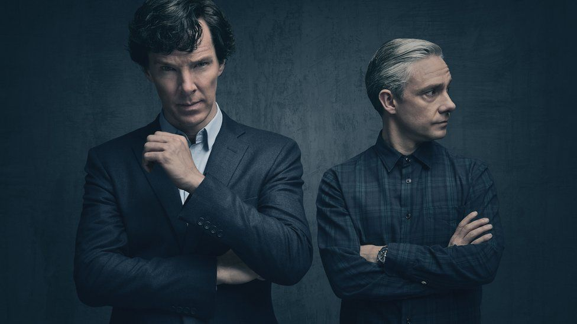

My Favorite Films and Movies
-
Sherlock Series (BBC Series)

There are so many compelling reasons to watch Sherlock, the BBC brain-twister that returns for a second season tonight as part of PBS’s Masterpiece: Mystery series. There’s the simple fact that it’s best procedural on television (at least, according to a totally unscientific poll of my friends), and that trying to keep up with its whiz-bang pacing actually makes you feel smarter. (Or maybe it’s just the effect of hearing guys with fancy British accents explain things like Suzhou numerals and the Golem myth while they’re solving crimes.)
-
Wednesday (Netflix Series)
The much anticipated The Addams Family remake is finally here in the form of Wednesday, a modern murder mystery show starring Jenna Ortega. This is the first addition to the long lived Addams family history that stars the only daughter of Morticia and Gomez Addams, Wednesday. Coincidentally, it was released just last Wednesday on November 23, 2022.
-
Hotel Del Luna
Hotel del Luna was more than just a fantasy romance drama. It managed to deliver resounding life lessons viewers can all learn from. Despite its otherworldly theme, Jang Man Wol, Goo Chan Seong, as well as the rest of the characters, were representations of ordinary people grappling to understand their existence